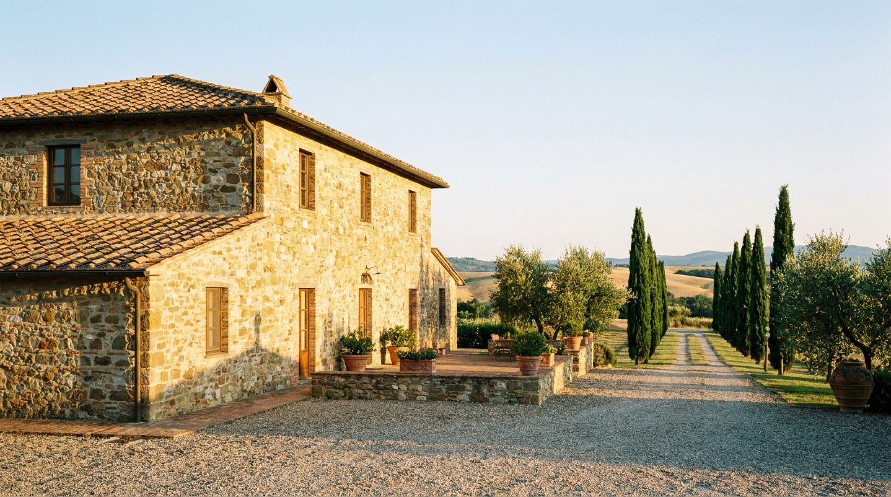
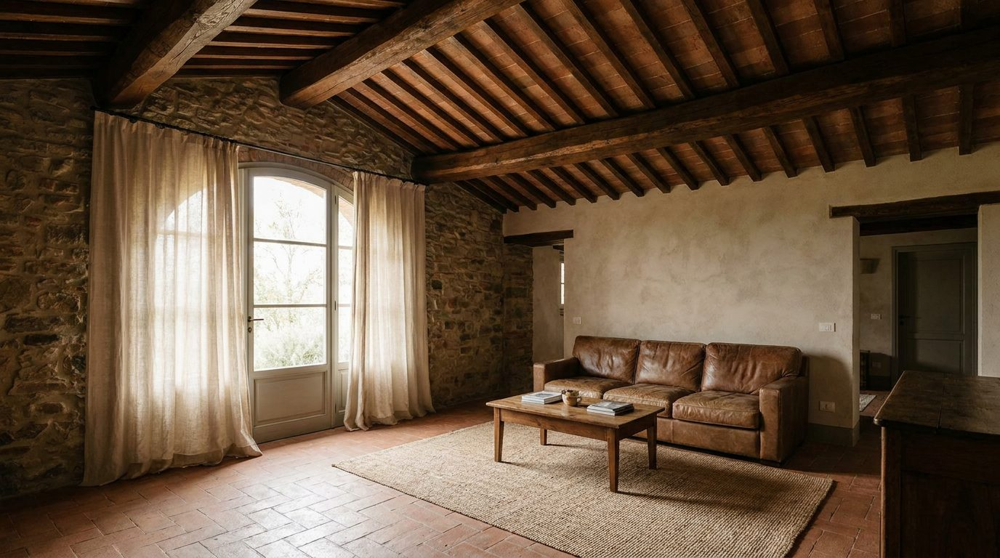

Atlante · IT-10 · Italia · Centro
Casale toscano ristrutturato
Esempi · esterno e interno


Architettura · elementi riproducibili
- pietra a vista, travi e mezzane, soffitti 3,5-4,5 m
- finestre piccole con davanzale in pietra
- pavimento in cotto
- camino in pietra
- integrazioni contemporanee in ferro nero e vetro
- pareti intonacate a calce grezza
- Il "lusso" sta nella ruvidezza controllata: materia irregolare + un oggetto contemporaneo netto.
Luce
sole caldo da sud, forte, con controluce dalle finestre piccole che disegna parallelogrammi sul cotto.
Prompt di generazione (EN)
Restored Tuscan farmhouse interior, exposed stone walls, chestnut beams and terracotta tiles, 4 m ceiling, lime-plaster patches, large stone fireplace, one contemporary black-steel console, hard warm south light entering from a small window, 35 mm, earthy grade with olive-green accents.